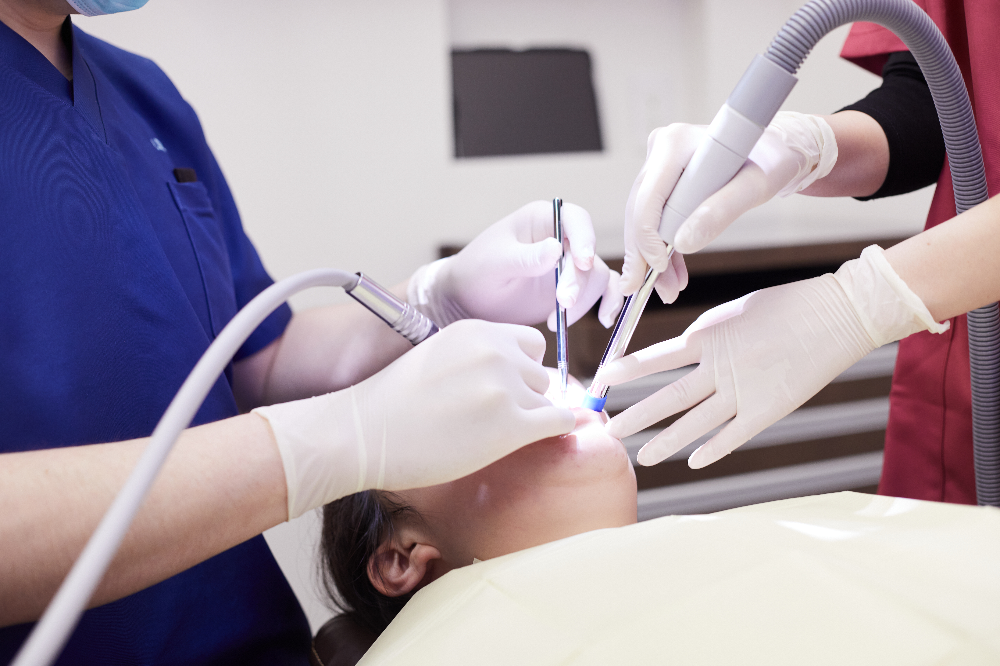
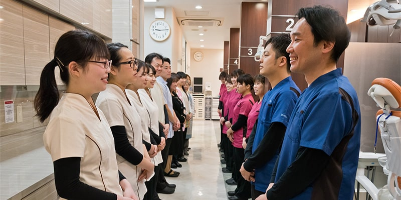
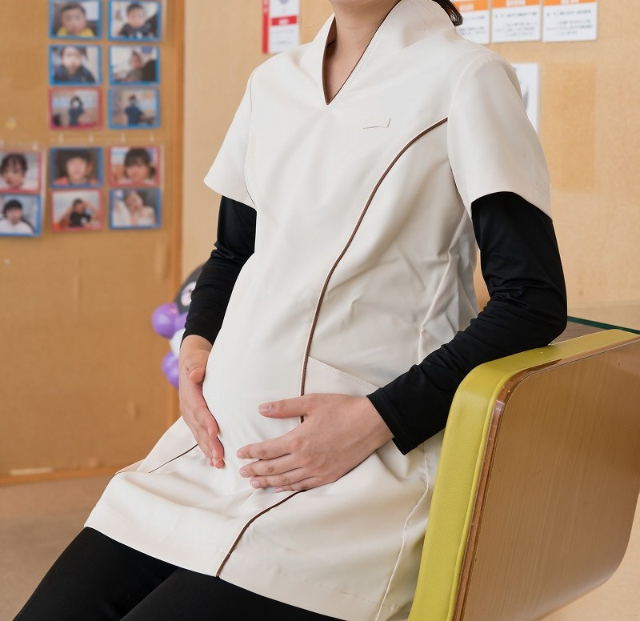
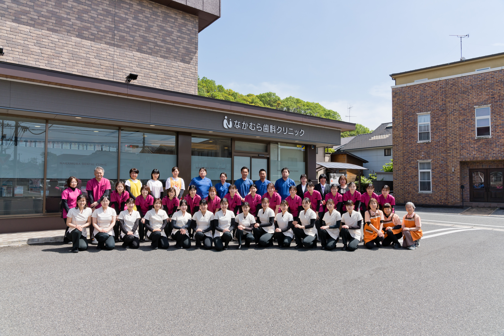

徳島大学卒
五十嵐 亮介
「困ったことがあればすぐ相談できる明るい雰囲気です。Drだけでなく衛生士や受付スタッフも含め、患者様のためにどうすべきかを自然に話し合えるチームワークが魅力です。」

固定給50.5万円〜の安心感と、3年間の体系的カリキュラム。
チェア16台・スタッフ47名のチーム医療で、迷いなく成長できる環境。
言葉を並べるよりも、実際の診療風景をご覧ください。


豊富な症例数と多職種の厚いサポート体制があるからこそ、若手ドクターが診療と成長に集中できます。
最初からすべてを一人で背負う必要はありません。4つの基盤があなたの臨床を支えます。

歩合に追われず臨床に集中できる固定給50.5万円〜をベースに設計。

担当の先輩Drと3年間の段階的カリキュラムで基礎から着実に習得。

週休2日・週休3日（週4常勤）・時短常勤までライフスタイルに合わせて選択。

産休育休・復職率100%。インプラントや矯正、医院経営まで選べる未来。
売上ノルマや歩合に焦ることなく、目の前の患者様と丁寧に向き合ってほしい。経験を積んだ後は、能力給（歩合18〜22％）への移行も選択可能です。
※月額総支給×12ヶ月（住宅手当・交通費含む／賞与別）
支給合計には「基本給＋固定残業代＋住宅手当（50,000円）＋交通費（5,000円）」を含みます。固定残業時間を超えた分は別途全額支給します。
| 卒後年数 | 基本給 | 固定残業代 | 固定時間 | 支給合計 |
|---|---|---|---|---|
| 2年目 | 339,000円 | 111,000円 | 45h | 505,000円 |
| 3年目 | 354,000円 | 116,000円 | 45h | 525,000円 |
| 4年目 | 377,000円 | 123,000円 | 45h | 555,000円 |
| 5年目 | 415,000円 | 135,000円 | 45h | 605,000円 |
| 6年目 | 452,000円 | 148,000円 | 45h | 655,000円 |
| 7年目以降 | 477,000円 | 173,000円 | 50h | 705,000円 |
| 年数 | 基本給 | 固定残業代 | 時間 | 支給合計 |
|---|---|---|---|---|
| 2年目 | 297,900円 | 36,800円 | 15h | 389,700円 |
| 3年目 | 311,100円 | 38,400円 | 15h | 404,500円 |
| 4年目 | 331,300円 | 40,900円 | 15h | 427,200円 |
| 5年目 | 364,600円 | 45,000円 | 15h | 464,600円 |
| 6年目 | 397,100円 | 49,000円 | 15h | 501,100円 |
| 7年目〜 | 419,200円 | 69,000円 | 20h | 543,200円 |
| 年数 | 基本給 | 固定残業代 | 時間 | 支給合計 |
|---|---|---|---|---|
| 2年目 | 271,600円 | 73,500円 | 30h | 400,100円 |
| 3年目 | 283,700円 | 76,800円 | 30h | 415,500円 |
| 4年目 | 302,100円 | 81,800円 | 30h | 438,900円 |
| 5年目 | 332,500円 | 90,000円 | 30h | 477,500円 |
| 6年目 | 362,100円 | 98,000円 | 30h | 515,100円 |
| 7年目〜 | 382,200円 | 137,900円 | 40h | 575,100円 |
| 年数 | 基本給 | 固定残業代 | 時間 | 支給合計 |
|---|---|---|---|---|
| 2年目 | 271,600円 | 36,800円 | 15h | 363,400円 |
| 3年目 | 283,700円 | 38,400円 | 15h | 377,100円 |
| 4年目 | 302,100円 | 40,900円 | 15h | 398,000円 |
| 5年目 | 332,500円 | 45,000円 | 15h | 432,500円 |
| 6年目 | 362,100円 | 49,000円 | 15h | 466,100円 |
| 7年目〜 | 382,200円 | 51,800円 | 15h | 489,000円 |
担当先輩Drのサポートと月1回の院長1on1。焦らず段階を踏み、3年で総合的な臨床力を身につけます。

歯冠修復・歯内療法を中心に

歯周病治療・全顎的な治療計画へ

口腔外科・精密義歯・インプラント
※医院指定セミナーは全額医院負担。希望セミナーも勤続年数に応じて手厚く補助します。
| 勤続年数 | 1年目 | 2年目 | 3年目 | 4年目以降 |
|---|---|---|---|---|
| 医院負担割合 | 20% | 30% | 40% | 50% |
| 年間上限額 | 10万円 | 20万円 | 30万円 | 40万円 |

3年間の教育プログラムで、保険から自費補綴まで揺るぎない臨床力を構築。

セミナー → アシスト → 術前診断 → 院長フルサポートでのオペまで段階的に習得。

日本矯正歯科学会認定医による月1回の院内レクチャーを勤務医は無償で受講可能。

将来の開業や分院長を見据え、マーケティングや医院運営のリアルも学べます。


私自身、研修医時代は厳しい環境に身を置き、「もっと上手くなりたい」という一心で臨床と勉強に打ち込みました。だからこそ、若手の先生が抱える「失敗したらどうしよう」という不安も痛感しています。
学生時代の経験や今の自分に自信がなくても心配はいりません。大切なのは「これからどうなりたいか」という想い。歯科医師人生の基盤となる最も大切な時期を、最高の仲間と設備の中で過ごしませんか。
2001年 神奈川歯科大学卒業 ／ 厚生労働省指定 歯科医師臨床研修指導歯科医 ／ OSSTEM IMPLANT 臨床研究歯科医院（2022年認定）
「困ったことがあればすぐ相談できる明るい雰囲気です。Drだけでなく衛生士や受付スタッフも含め、患者様のためにどうすべきかを自然に話し合えるチームワークが魅力です。」

「治療計画の立案から完了まで一貫して担当できます。助けが必要な場面では院長をはじめ先輩Drが即座にフォローしてくださるので、安心して診療に臨めます。」

「見学時に見た雰囲気と入職後のギャップが全くありませんでした。スタッフ同士の仲が良く働きやすいうえ、希望していた自費治療も手掛けることができ大変満足しています。」
転職を迷っている段階でも構いません。見学のみ・ZOOM相談・LINE質問すべて歓迎です。
 STEP 01
STEP 01
履歴書不要・面接なし。実際の診療風景とスタッフの空気感をご覧ください。
 STEP 02
STEP 02
 STEP 03
STEP 03
双方の希望をすり合わせた上で、正式な選考・採用決定となります。
卒後臨床経験2年目以上の歯科医師が主な対象です（ブランク可）。臨床研修医の方は臨床研修施設向けページをご覧ください。
入職当初は安定した固定給で基礎を固めていただき、その後は能力・希望に応じて能力給（歩合18〜22%）へ移行可能です。
はい。セミナー受講、院長オペのアシスト、術前診断、サージカルガイド使用オペへと段階的に進み、オペ時は院長がフルサポートします。
可能です。週休2日・週休3日（週4常勤）・短時間常勤の中からライフスタイルに合わせて選択・相談できます。
可能です。住宅手当（月5万円）、引越しお祝い金10万円〜（相談）、新幹線通勤を含む交通費個別相談など手厚い支援があります。
産休・育休取得率100%・復職率100%の実績があり、男性歯科医師の育休取得実績もございます。
| 勤務形態 | 週5常勤 | 週4常勤（週休3日） | 短時間常勤 |
|---|---|---|---|
| 給与（総支給） | 505,000円 〜 705,000円 | 400,100円 〜 575,100円 | 389,700円 〜 543,200円 |
| 勤務時間 | 8:00〜18:00（休憩60分） | 要相談 | 曜日・時間帯相談可 |
| 休日 | 週休2日（日祝休み／シフト制） | 週休3日 | 週休2日・要相談 |
| 休暇 | GW・夏期・冬期・特別休暇・有給休暇 | ||
| 福利厚生・待遇 | 社会保険完備（厚生年金・雇用保険・労災）／住宅手当・交通費／昇給年1回／セミナー参加支援／学会出席費用補助（要相談） ※固定残業代は実際の残業時間にかかわらず支給。超過分は別途支給。 |
||
| 応募条件 | 歯科医師免許をお持ちの方（卒後臨床経験2年目以上・ブランク可）／最低3年以上の勤続を希望します | ||
| 選考方法 | 書類選考・面接・見学（見学のみOK）。提出書類：志望理由書、歯科医師免許証、写真付き履歴書 | ||
見学だけ、LINEでの相談だけでも歓迎です。あなたのキャリアの第一歩をここから始めましょう。